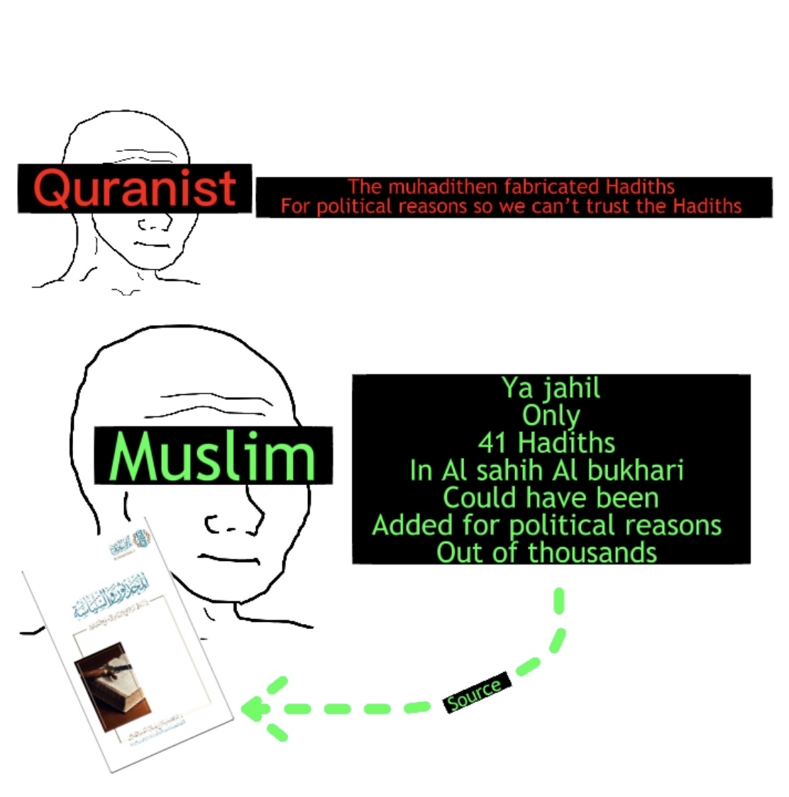

Hadith and politics
Home
About
Contact
 Note: This is for argument sake none of the authentic Hadiths "could have been added" So if the muhadithen somehow fabricated Hadiths then it would be only those 41 Hadiths